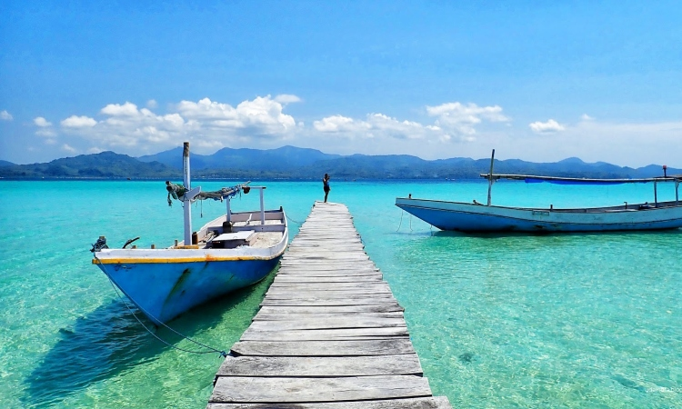

1. Pulau Gili Noko
Gili Noko Island is popular for its exotic underwater scenery.
Therefore, when traveling to Gili Niko you should try snorkeling.
For the trip to Gili Niko, you can ride an engine boat from Bawean
Island for about 20 minutes.
Apart from the enchanting underwater scenery, colorful small fish,
coral rocks, and various other exotic marine biota, this island also
offers beautiful scenery of white sand beaches with calm waves that
are no less exotic.
